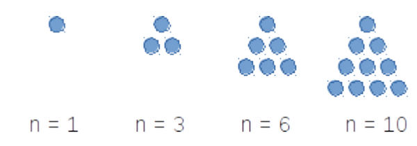

CSE 20 Spring 2024
Practice for Test 1
Below are the instructions that will be on the first page of the test package:
INSTRUCTIONS — READ THIS NOW
Write your name, PID, current seat number, exam time, and the academic integrity pledge in the indicated space above and on the designated answer sheet. We will check for all of this identifying information before grading. Write your answers in the specified areas, or your work will not be graded.
We will not be answering questions about the exam during the exam period. If any bugs are found in the exam after the exam period, the affected question part(s) will be addressed.
You may use one 8.5"x11", doublesided sheet of notes that you create and bring to the exam room, but no other books, notes, or aids.
You may not speak to any other student in the exam room while the exam is in progress (including after you hand in your own exam). You may not share any information about the exam with anyone who has not taken it.
Turn off and put away all cellphones, calculators, and other electronic devices. You may not access any electronic device during the exam period. If you need to leave the room during the exam period, you must leave all electronic devices with an exam proctor.
To receive full credit, your answers must be written neatly, legibly, and sufficiently darkly to scan well in the indicated answer box. Your solution will be evaluated both for correctness and clarity. Read the instructions for each part carefully to determine what is required for full credit. This test has \(??\) problems worth a total of \(??\) points.
This exam is 45 minutes long. Read all the problems first before you start working on any of them, so you can manage your time wisely.
Please stay seated until the end of the exam period. We will collect all exams and note sheets at the end of the exam period, to minimize disruption for students who wish to use the full time for the exam. Please show your ID to a proctor when you hand in your exam.
In machine learning, clustering can be used to group similar data for prediction and recommendation. For example, each Netflix user’s viewing history can be represented as a \(n\)-tuple indicating their preferences about movies in the database, where \(n\) is the number of movies in the database. Each element in the \(n\)-tuple indicate the user’s rating of the corresponding movie: \(1\) indicates the person liked the movie, \(-1\) that they didn’t, and \(0\) that they didn’t rate it one way or another.
Consider the following algorithm for determining if a user’s viewing history represents strong opinions on many movies.
procedure \(\textit{opinion}\)(\((r_1, \ldots, r_n)\): a \(n\)-tuple of ratings; \(c\): a nonnegative integer) \(sum\) := \(0\) for \(i\) := \(1\) to \(n\) if \(r_i \neq 0\) \(sum\) := \(sum + 1\) return \(sum \geq c\)
When \(n = 3\), describe the set of all \(n\)-tuples representing user ratings
By the roster method.
With set builder notation.
Using a recursive definition.
What are the possible return (output) values of this algorithm?
Trace the computation of \(opinion( (-1, 0, 0, 0, 1, 1,-1), 2)\).
Give an example of a nonnegative integer \(c\) so that, no matter which \(n\)-tuple \((r_1, \ldots, r_n)\) we consider, \(opinion( (r_1, \ldots, r_n), c)\) will have the same value. What value is it?
Give a recursive definition for the set \(\mathbb{N}\).
Use the recursive definition from part (a) to give a recursive definition for the function with domain \(\mathbb{N}\), codomain \(\mathbb{N}\) which computes, for input \(i\), the sum of the first \(i\) powers of \(2\). For example, on input \(0\), the function evaluates to \(2^0\), namely to \(1\). On input \(1\), the function evaluates to \(2^0 + 2^1\), namely \(3\). On input \(2\), the function evaluates to \(2^0 + 2^1 + 2^2\), namely \(7\).
Compute the ternary (base 3) expansion of \(28\).
Compute the product of \((6A)_{16}\) and \((11)_{16}\), without converting either number to another base.
Confirm your answer for part (b) by converting \((6A)_{16}\) and \((11)_{16}\) to decimal, multiplying them, and converting the product to base \(16\).
How many bits will there be in the binary (base \(2\)) expansion of \(2020\)? Can you compute this without fully converting \(2020\) to base \(2\)?
Give an example of a number that can be represented in base 2 fixed-width 3, but not in base 2 expansion.
Give an example of a number that can be represented in base 2 expansion, but not in base 2, fixed-width 3 expansion.
Give the representation of -7 in sign-magnitude width 3 and 2s complement width 3. Then do the same for width 4.
Give the representation of 10.5625 in fixed-width base-2 expansion with integer width 4 and fractional width 9.
A triangular number (or triangle number) counts the objects that can form an equilateral triangle, as in the diagram below. The \(n^{\text{th}}\) triangular number is the sum of the first \(n\) integers, as shown in the following figure illustrating the first four triangular numbers (what is the fifth one?):

Design a circuit that takes four inputs \(x_0, x_1, x_2, x_3\) and outputs True (T or 1) if the integer value \((x_3x_2x_1x_0)_{2,4}\) is a triangular number, and False (F or 0) otherwise. You may assume that 0 is not a triangular number. (Credit: UBC Department of Computer Science)
Draw a logic circuit that uses exactly three gates and is logically equivalent to \[q \leftrightarrow (p \wedge r)\] You may (only) use AND, OR, NOT, and XOR gates.
Write a compound proposition which is logically equivalent to \[(p \oplus q) \leftrightarrow r\] You may only use the logical operators negation (\(\neg\)), conjunction \((\wedge)\), and disjunction \((\vee)\).
Find a compound proposition that is in DNF (disjunctive normal form) and is logically equivalent to \[(p \vee q \vee \neg r) \wedge (p \vee \neg q \vee r ) \wedge (\neg p \vee q \vee r)\]
2
\(p\) is “The display is 13.3-inch"
\(r\) is “There is at least 128GB of flash storage"
\(u\) is “There is at least 512GB of flash storage"
\(q\) is “The processor is 2.2 GHz"
\(s\) is “There is at least 256GB of flash storage"
Are the statements \[p \to (r \vee s \vee u) \qquad, \qquad q \to (s \vee u) \qquad, \qquad p \leftrightarrow q \qquad, \qquad \neg u\] consistent? If so, translate to English a possible assignment of truth values to the input propositions that makes all four statements true simultaneously.
Consider this statement in English:
It’s not the case that both the display is 13.3-inch and the processor is 2.2 GHz.
Determine whether each of the compound propositions below is equivalent to the negation of that statement, and justify your answers using either truth tables or other equivalences.
Possible compound propositions:
\(\neg p \vee \neg q\)
\(\neg (p \to \neg q)\)
\(\neg ( p \wedge q)\)
\((\neg p \leftrightarrow \neg q) \wedge p\)
Consider the compound proposition \[(p \wedge q) \to (r \vee s \vee u)\] Express the contrapositive of this conditional as a compound proposition.
Then, give an assignment of truth values to each of the input propositional variables for which the original compound proposition is True but its converse is False.
Over the domain \(\{ 1,2,3,4,5\}\) give an example of predicates \(P(x), Q(x)\) which demonstrate that \[(\forall x P(x)) \vee (\forall x Q(x)) \qquad \text{is not logically equivalent to} \qquad \forall x (~ P(x) \vee Q(x) ~)\]
Over the domain \(\{0,1,2\}\), give an example of predicates \(P(x), Q(x)\) for which all of these statements are true: \[\forall x (P(x) \to Q(x))\] \[\exists x \, P(x)\] \[\exists x \, \neg P(x)\] \[\exists x \, \neg Q(x)\]
Recall that \(S\) is defined as the set of all RNA strands, where each strand is a nonempty string made of the bases in \(B = \{\texttt{A},\texttt{U},\texttt{G},\texttt{C}\}\). Recall the definition of the following predicates: \(F_{\texttt{A}}\) with domain \(S\) is defined recursively by:
Basis step: \(F_{\texttt{A}}(\texttt{A}) = T\), \(F_{\texttt{A}}(\texttt{C}) = F_{\texttt{A}}(\texttt{G}) = F_{\texttt{A}}(\texttt{U}) = F\)
Recursive step: If \(s \in S\) and \(b \in B\), then \(F_{\texttt{A}}(sb) = F_{\texttt{A}}(s)\)
\(P_{\texttt{A}\texttt{U}\texttt{C}}\) with domain \(S\) is defined as the predicate whose truth set is the collection of RNA strands where the string \(\texttt{A}\texttt{U}\texttt{C}\) is a substring (appears inside \(s\), in order and consecutively)
\(L\) with domain \(S \times \mathbb{Z}^+\) is defined by, for \(s \in S\) and \(n \in \mathbb{Z}^+\), \[L( s, n) = \begin{cases} T &\qquad\text{if $rnalen(s) = n$}\\ F &\qquad\text{otherwise}\\ \end{cases}\]
Give a witness for \(\exists s_1 \, \exists s_2 \,(L(s_1, 4) \land L(s_2,4) \land \neg ( s_1 = s_2) )\) where \(S\) is the set of RNA strands, \(L(s, n)\) is a predicate with domain \(S \times \mathbb{Z}^+\) that is true when \(s\) has length \(n\)
Give a counterexample that disproves \(\forall i \,(\neg L(\texttt{A}\texttt{C}\texttt{U}, i))\)
Determine which of the following statements is True or False (you do not need to prove your answer).
\(\exists n \in \mathbb{Z}^+~ \forall s \in S~ ( P_{\texttt{A}\texttt{U}\texttt{C}}(s) \to \lnot L(s,n) )\)
\(\exists n \in \mathbb{Z}^+~ \forall s \in S~ ( P_{\texttt{A}\texttt{U}\texttt{C}}(s) \land \lnot L(s,n) )\)
\(\forall s \in S~\exists n \in \mathbb{Z}^+~ ( P_{\texttt{A}\texttt{U}\texttt{C}}(s) \lor \lnot L(s,n) )\)
\(\forall s \in S~\exists n \in \mathbb{Z}^+~ (L(s,n) \to \lnot P_{\texttt{A}\texttt{U}\texttt{C}}(s))\)